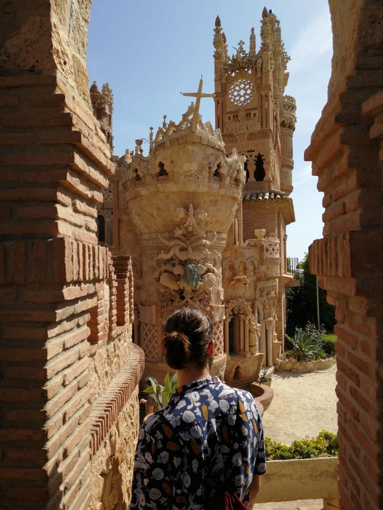

I was born in Madrid, Spain, although I didnt stay there for very long. Moving houses and moving schools was a bit of a drag, but after settling down and studying hard, I was able to go the Edinburgh University to earn a Bachelors Hons in Immunology.
Soon after graduating, and looking to spend some time in the UK to get my settled status, I started working as a receptionist, first in a University accommodation-turned-hotel for the summer, and in a 5-star aparthotel in the centre thereafter.
With time, though, tasks became repetitive. Wanting to step out of the loop, I started studying python again (I used to do computer science back in school before dropping it for biology), which brought back the passion of programming. I pitched an idea to my general manager, and after some deliberation, they decided to fund my codecademy Full Stack learning career, which is where we are now!
